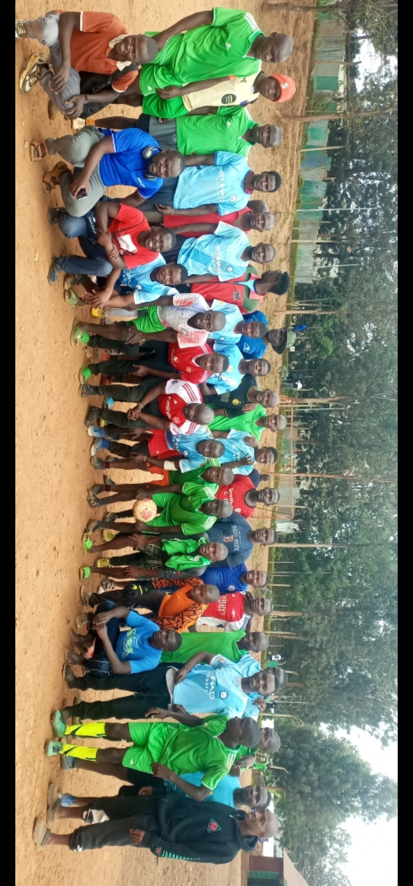

Together we rise
Founded: 2025 | Location: Babadogo | Colors: Blue & Red
Founded: 2025 | Location: Babadogo | Colors: Blue & Red
Founded in 2025 and based in Babadogo, Chandaria Converting Football Club (C.C.F.C.) is a passionate team of workmates and friends united by the love of football. The club plays every weekend for leisure, competition, and camaraderie, promoting sportsmanship, teamwork, and growth among colleagues — both on and off the pitch. Guided by our motto “Together we rise”, we continue to build a culture of unity and excellence in the local football community.
